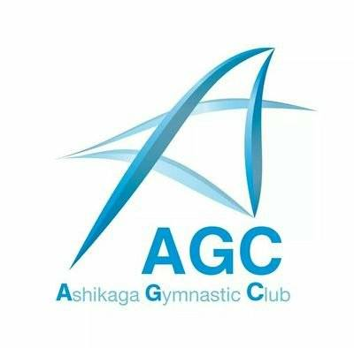

栃木県足利市で「あそぶ」と「鍛える」を3つの形で提供しています。
子供から大人まで、それぞれの目的に合わせた運動環境をお届けする会社です。
それぞれの公式サイトで詳しい情報をご覧いただけます
栃木県初のトランポリンアミューズメントパーク。5つのエリア（トランポリン・スポンジプール・ウォール・忍者コース・デビルスライダー）で、子供から大人まで丸ごと楽しめる屋内施設です。
公式サイトを見る →
🤾幼児・キッズから選手コースまで、年齢と目的に合わせたクラス編成。体育の基礎運動から競技体操・アクロバット指導まで、地域に根差した丁寧な指導を行う体操クラブです。
公式サイトを見る →
未経験から始められるチアダンス教室。仲間と楽しみながら、ダンス・タンブリング・チームワーク・人前で表現する力を育てます。発表会や大会への出場も。
公式サイトを見る →| 会社名 | 株式会社 Gym plus（Gym plus Co., Ltd.） |
|---|---|
| 代表取締役 | 中村 祐介 |
| 所在地 | 〒326-0824 栃木県足利市八幡町3-16-4 |
| 電話番号 | 0284-22-8026 |
| 事業内容 |
トランポリンパーク運営（Jumpolin） 体操クラブ運営（あしかが体操クラブ） チアダンス教室運営（Bullets チア教室） |